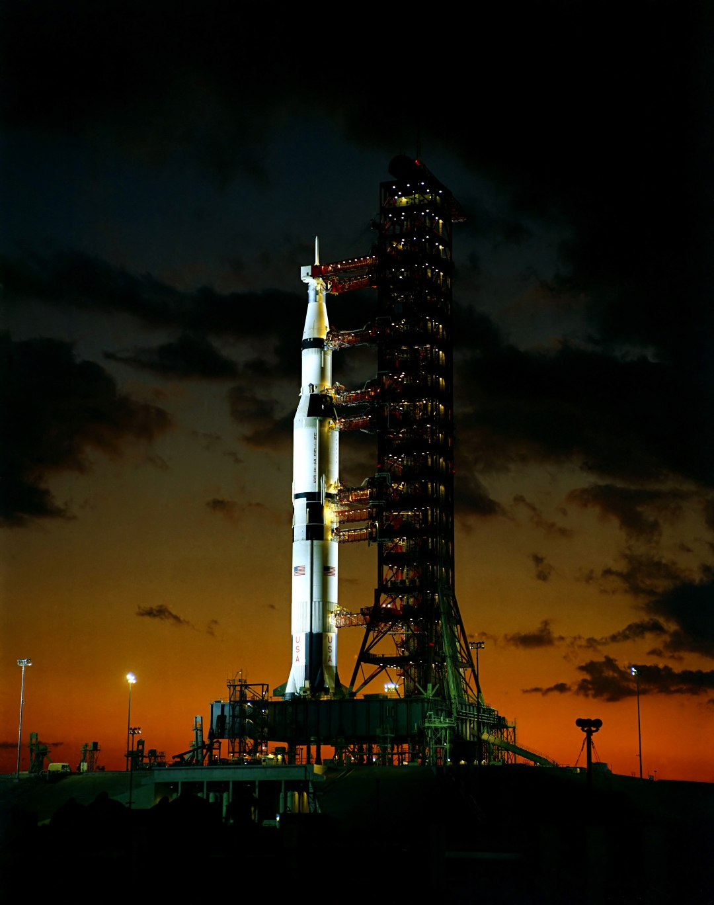
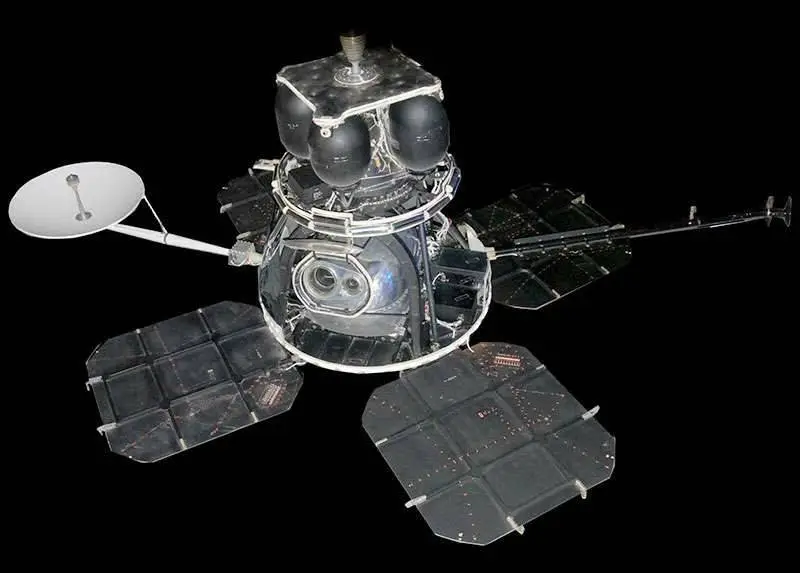
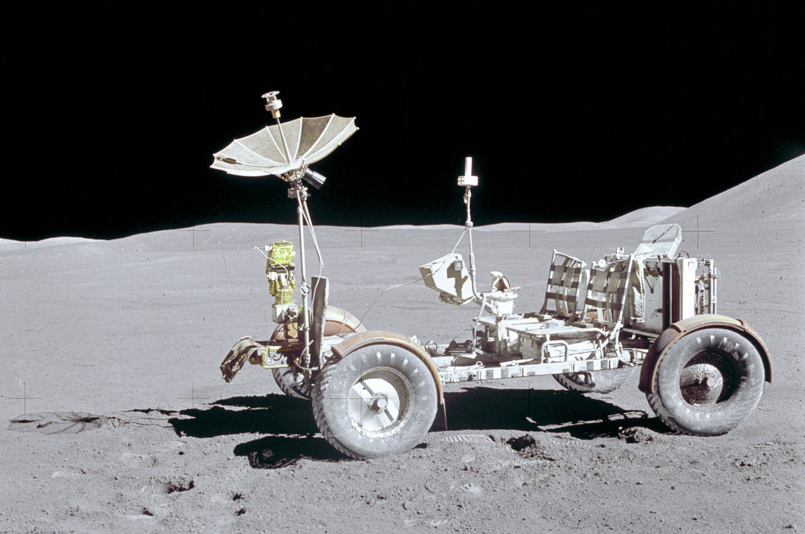

Tecnologia Espacial
Foguetes
O foguete Saturno V foi o veículo de lançamento usado para a missão Apollo 11. Este foguete colossal, desenvolvido pela NASA, é um dos mais poderosos já construídos e foi fundamental para enviar a Apollo 11 à Lua.
Satélites
Lunar Orbiter 1 foi a primeira sonda espacial estadunidense a orbitar a Lua, lançada em 1966 como parte do Programa Lunar Orbiter da NASA. Essa missão tinha como objetivo fotografar os potenciais locais de pouso para as missões Apollo e fornecer imagens do tereno lunar.
Rovers
Rover lunar
O Lunar Roving Vehicle (LRV) é um pequeno veículo elétrico utilizado nas missões Apollo para permitir que os astronautas explorassem as áreas ao redor do local de pouso lunar. Ele foi usado pela primeira vez na missão Apollo 15 para explorar regiões a até 5 km do local de pouso e também foi utilizado nas missões Apollo 16 e Apollo 17. Após cada missão, os veículos foram deixados na Lua.